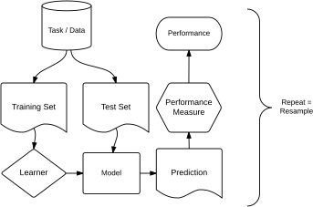

2 Fundamentals
Lars Kotthoff ![]()
Abstract
We describe and explain the basic building blocks of mlr3 and how to train and evaluate simple machine learning models. The chapter introduces the different types of tasks that mlr3 supports and how to work with them, learners and how to train models, how to make predictions using those trained models, and how to evaluate the quality of the predictions in a principled fashion. Only the basic concepts are introduced, but we give pointers on where to learn more in the rest of the book, and overviews of other concepts. After reading this chapter, you will be able to use mlr3 for most machine learning workflows.
In this chapter, we will introduce the mlr3 objects and corresponding R6 classes that implement the essential building blocks of machine learning. These building blocks include the data (and the methods of creating training and test sets), the machine learning algorithm (and its training and prediction process), and evaluation measures to assess the quality of predictions.
In essence, machine learning means learning relationships from data. In supervised learning, datasets consist of observations (rows in tabular data) that are labeled, which means that each data point includes features (columns in tabular data) and a quantity that we are trying to predict, also called ‘target’. For example, we might want to predict the miles per gallon a car gets based on features such as its horsepower and the number of gears. Data and information on what they represent, along with what quantities to predict are called “tasks” in mlr3 (Appendix C) – they can be thought of as machine learning tasks we are trying to solve. There can be more than one task per dataset, for example ones that include different sets of features, observations, or predict different target quantities.
Supervised learning can be further divided into regression (predicting numeric target values) and classification (predicting categorical target values/labels). In either case, the goal is to build a model that captures the relationship between features and target. We can build such models using machine learning algorithms, for example decision trees, support vector machines, neural networks, and many more. A machine learning algorithm, given training data, induces such a model. Machine learning algorithms are called “learners” in mlr3 (Section 2.2) – given data, they learn models. Each learner has a parameterized space that potential models are drawn from and during the training process, these parameters are fitted to best match the data. For example, the parameters could be the weights given to individual features when predicting a quantity in linear regression. For other learners, the parameters are not as explicit, for example for decision tree learners where a fitted model corresponds to a particular decision tree. All learners optimize a so-called loss function during training, i.e. training a learner means finding the model that optimizes the loss. In general, a loss function quantifies the mismatch between ground truth target values in the training data and the predictions of the model.
Given a model, we can make predictions (Section 2.2.2) on new data. A model is only useful though if it generalizes beyond the training data. Otherwise, we could build a perfect model by simply memorizing the training data. Therefore, separate test data is used to evaluate models in an unbiased way and to assess to what extent they have learned the true relationships that underlie the data (Chapter 3). We can evaluate models in mlr3 in many ways (Section 2.3). In general, we use the same kind of loss function that the learner used to build the model, but now with data that was not used during training. The performance of a model, quantified by the value of the loss function when evaluated on new data, is called the estimated of the generalization error – how well do we expect this model to do in general? mlr3 calls loss functions “measures”. We can use different measures for training and testing, although it makes most sense for the measures to be the same.
Much more information on (supervised) machine learning can be found in Hastie, Friedman, and Tibshirani (2001), James et al. (2014), or Bishop (2006).
The basic idea is illustrated in the following figure:
2.1 Tasks
Tasks are objects that contain the (usually tabular) data and additional meta-data that define a machine learning problem. The meta-data contain, for example, the name of the target feature for supervised machine learning problems. This information is used automatically by operations that can be performed on a task so that for example the user does not have to specify the prediction target every time a model is trained.
2.1.1 Built-in Tasks
mlr3 includes a few predefined machine learning tasks in an R6 Dictionary named mlr_tasks.
<DictionaryTask> with 19 stored values
Keys: bike_sharing, boston_housing, breast_cancer, german_credit, ilpd,
iris, kc_housing, moneyball, mtcars, optdigits, penguins,
penguins_simple, pima, sonar, spam, titanic, usarrests, wine, zooTo get a task from the dictionary, use the tsk() function and assign the return value to a new variable. Here, we retrieve the mtcars regression task, which is provided by the package datasets:
<TaskRegr:mtcars> (32 x 11): Motor Trends
* Target: mpg
* Properties: -
* Features (10):
- dbl (10): am, carb, cyl, disp, drat, gear, hp, qsec, vs, wtTo get more information about a particular task, it is easiest to use the help() method that all mlr3-objects come with:
Tip
Alternatively, the corresponding man page can be found under mlr_tasks_<id>, e.g.
We can also load the data separately and convert it to a task, without using the tsk() function that mlr3 provides. If the data we want to use does not come with mlr3, it has to be done this way.
For example, the data for mtcars is also available separately, as a data.frame() and not a task. mtcars contains characteristics for different types of cars, along with their fuel consumption. We want to predict the numeric target feature stored in column "mpg" (miles per gallon).
'data.frame': 32 obs. of 11 variables:
$ mpg : num 21 21 22.8 21.4 18.7 18.1 14.3 24.4 22.8 19.2 ...
$ cyl : num 6 6 4 6 8 6 8 4 4 6 ...
$ disp: num 160 160 108 258 360 ...
$ hp : num 110 110 93 110 175 105 245 62 95 123 ...
$ drat: num 3.9 3.9 3.85 3.08 3.15 2.76 3.21 3.69 3.92 3.92 ...
$ wt : num 2.62 2.88 2.32 3.21 3.44 ...
$ qsec: num 16.5 17 18.6 19.4 17 ...
$ vs : num 0 0 1 1 0 1 0 1 1 1 ...
$ am : num 1 1 1 0 0 0 0 0 0 0 ...
$ gear: num 4 4 4 3 3 3 3 4 4 4 ...
$ carb: num 4 4 1 1 2 1 4 2 2 4 ...We create the regression task, i.e. we construct a new instance of the R6 class TaskRegr. An easy way to do this is to use the function as_task_regr() to convert our data.frame() to a regression task, specifying the target feature in an additional argument. Before we give the data to as_task_regr(), we can process it using the usual R functions, for example to select a subset of data.
library("mlr3")
mtcars_subset = subset(mtcars, select = c("mpg", "cyl", "disp"))
task_mtcars = as_task_regr(mtcars_subset, target = "mpg", id = "cars")
task_mtcars<TaskRegr:cars> (32 x 3)
* Target: mpg
* Properties: -
* Features (2):
- dbl (2): cyl, disp
Tip
The task constructors as_task_regr() and as_task_classif() will check for non-ASCII characters in the column names of your data. As many ML models do not work properly with arbitrary UTF8 names, mlr3 defaults to throw an error if any of the column names contains either a non-ASCII character or does not comply with R’s variable naming scheme. We generally recommend converting names with make.names() first, but you can also set the option mlr3.allow_utf8_names to true to relax the check (but do not be surprised if a model fails).
The data can be any rectangular data format, e.g. a data.frame(), data.table(), or tibble(). Internally, the data is converted and stored in a DataBackend. The target argument specifies the prediction target column. The id argument is optional and specifies an identifier for the task that is used in plots and summaries. If no id is given provided, the deparsed name of the data will be used (an R way of turning data into strings).
Printing a task gives a short summary: it has 32 observations and 3 columns, of which mpg is the target and 2 are features stored in double-precision floating point format.
We can plot the task using the mlr3viz package, which gives a graphical summary of the distribution of the target and feature values:

2.1.2 Retrieving Data
The Task object primarily represents a tabular dataset, combined with meta-data about which columns of that data should be used to predict which other columns in what way, and some more information about column data types.
Various fields can be used to retrieve meta-data about a task. The dimensions, for example, can be retrieved using $nrow and $ncol:
The names of the feature and target columns are stored in the $feature_names and $target_names slots, respectively. Here, “target” refers to the feature we want to predict and “feature” to the predictors for the task.
While the columns of a task have unique character-valued names, their rows are identified by unique natural numbers, called row IDs. They can be accessed through the $row_ids slot:
Row IDs are not used as features when predicting; they are meta-data that allows to access individual observations.
Warning
Although the row IDs are typically just the sequence from 1 to nrow(data), they are only guaranteed to be unique natural numbers. It is possible that they do not start at 1, that they are not increasing by 1 each, or that they are not even in increasing order. This allows to transparently operate on real database management systems, where uniqueness is the only requirement for primary keys.
The data contained in a task can be accessed through $data(), which returns a data.table object. It has optional rows and cols arguments to specify subsets of the data to retrieve. When a database backend is used, this avoids loading unnecessary data into memory, making it more efficient than retrieving the entire data first and then subsetting it using [<rows>, <cols>].
mpg cyl disp
1: 21.0 6 160.0
2: 21.0 6 160.0
3: 22.8 4 108.0
4: 21.4 6 258.0
5: 18.7 8 360.0
---
28: 30.4 4 95.1
29: 15.8 8 351.0
30: 19.7 6 145.0
31: 15.0 8 301.0
32: 21.4 4 121.0# retrieve data for rows with IDs 1, 5, and 10 and column "mpg"
task_mtcars$data(rows = c(1, 5, 10), cols = "mpg") mpg
1: 21.0
2: 18.7
3: 19.2A shortcut to extract all data from a task is to simply convert it to a data.table:
mpg cyl disp
Min. :10.40 Min. :4.000 Min. : 71.1
1st Qu.:15.43 1st Qu.:4.000 1st Qu.:120.8
Median :19.20 Median :6.000 Median :196.3
Mean :20.09 Mean :6.188 Mean :230.7
3rd Qu.:22.80 3rd Qu.:8.000 3rd Qu.:326.0
Max. :33.90 Max. :8.000 Max. :472.0 2.1.3 Task Mutators
It is often necessary to create tasks that encompass subsets of other tasks’ data, for example to manually create train-test-splits, or to fit models on a subset of given features. Restricting tasks to a given set of features can be done by calling $select() with the desired feature names. Restriction to rows (observations) is done with $filter() with the row IDs.
task_mtcars_small = tsk("mtcars") # initialize with the full task
task_mtcars_small$select(c("am", "carb")) # keep only these features
task_mtcars_small$filter(2:4) # keep only these rows
task_mtcars_small$data() mpg am carb
1: 21.0 1 4
2: 22.8 1 1
3: 21.4 0 1These methods are so-called mutators; they modify the given Task in place. If you want to have an unmodified version of the task, you need to use the $clone() method to create a copy first.
task_mtcars_smaller = task_mtcars_small$clone()
task_mtcars_smaller$filter(2)
task_mtcars_smaller$data() mpg am carb
1: 21 1 4 mpg am carb
1: 21.0 1 4
2: 22.8 1 1
3: 21.4 0 1Note also how the last call to $filter(2) did not select the second row of task_mtcars_small, but the row with ID 2, which is the first row of task_mtcars_small.
Tip
The methods above allow to subset the data; the methods $rbind() and $cbind() allow to add extra rows and columns to a task.
2.1.4 Roles (Rows and Columns)
Some readers may want to skip this section of the book.
We have seen that certain columns are designated as “targets” and “features” during task creation; mlr3 calls this “roles”. Target refers to the column(s) we want to predict and features are the predictors (also called co-variates or descriptors) for the target. Besides these two, there are other possible roles for columns. The roles affect the behavior of the task for different operations.
The task_mtcars_small task, for example, has the following column roles:
$feature
[1] "am" "carb"
$target
[1] "mpg"
$name
[1] "model"
$order
character(0)
$stratum
character(0)
$group
character(0)
$weight
character(0)As you can see, there are additional column roles; the interested reader is referred to the documentation of Task for more detail. We can list all supported column roles by printing the names of the field $col_roles:
[1] "feature" "target" "name" "order" "stratum" "group" "weight" Columns can have multiple roles. It is also possible for a column to have no role at all, in which case they are ignored. This is, in fact, how $select() and $filter() operate: They unassign the "feature" (for columns) or "use" (for rows) role without modifying the data which is stored in an immutable backend:
<DataBackendDataTable> (32x13)
model mpg cyl disp hp drat wt qsec vs am gear carb ..row_id
Mazda RX4 21.0 6 160 110 3.90 2.620 16.46 0 1 4 4 1
Mazda RX4 Wag 21.0 6 160 110 3.90 2.875 17.02 0 1 4 4 2
Datsun 710 22.8 4 108 93 3.85 2.320 18.61 1 1 4 1 3
Hornet 4 Drive 21.4 6 258 110 3.08 3.215 19.44 1 0 3 1 4
Hornet Sportabout 18.7 8 360 175 3.15 3.440 17.02 0 0 3 2 5
Valiant 18.1 6 225 105 2.76 3.460 20.22 1 0 3 1 6
[...] (26 rows omitted)There are two main ways to manipulate the column roles of a Task:
- Use the
Taskmethod$set_col_roles()(recommended). - Directly modify the field
$col_roles, which is a named list of vectors of column names. Each vector in this list corresponds to a column role, and the column names contained in that vector have the corresponding role.
Just as $select()/$filter(), these are in-place operations, i.e. the task object itself is modified. To retain an unmodified version of a task, use $clone().
Changing the column or row roles, whether through $select()/$filter() or directly, does not change the underlying data, it just updates the view on it. Because the underlying data are still there (and accessible through $backend), we can add the "cyl" column back into the task by setting its column role to "feature".
task_mtcars_small$set_col_roles("cyl", roles = "feature")
task_mtcars_small$feature_names # cyl is now a feature again[1] "am" "carb" "cyl" mpg am carb cyl
1: 21.0 1 4 6
2: 22.8 1 1 4
3: 21.4 0 1 6Just like columns, it is also possible to assign different roles to rows. Rows can have two different roles:
- Role
use: Rows that are generally available for training (although they may also be used for the test set). This role is the default role. The$filter()call changes this role, in the same way that$select()changes the"feature"column role. - Role
validation: Rows that are not used for training. Rows that have missing values in the target column during task creation are automatically set to the validation role.
There are several reasons to hold some observations back or treat them differently:
- It is often good practice to validate the final model on an external validation set to identify overfitting.
- Some observations may be unlabeled in the original data, e.g. in competitions like Kaggle1.
These observations cannot be used for training a model, but can be used for getting predictions from a trained model.
2.2 Learners
Objects of class Learner provide a unified interface to many popular machine learning algorithms in R. They are available through the mlr_learners dictionary. The list of learners supported in the base package mlr3 is deliberately small to avoid dependencies; support for additional learners is provided by the mlr3learners and mlr3extralearners packages.
Learners encapsulate methods to train a model and make predictions using it given a Task and provide meta-data about the learners. The base class of each learner is Learner.
To retrieve a Learner from the mlr_learners dictionary, use the function lrn():
Each learner provides the following meta-data:
-
$feature_types: the type of features the learner can deal with. -
$packages: the packages required to train a model with this learner and make predictions. -
$properties: additional properties and capabilities. For example, a learner has the property “missings” if it is able to handle missing feature values, and “importance” if it computes and allows to extract data on the relative importance of the features. -
$predict_types: possible prediction types. For example, a regression learner can predict numerical values (“response”) and may be able to predict the standard error of a prediction (“se”).
This information can be queried through these slots, or seen at a glance when printing the learner:
<LearnerRegrRpart:regr.rpart>: Regression Tree
* Model: -
* Parameters: xval=0
* Packages: mlr3, rpart
* Predict Types: [response]
* Feature Types: logical, integer, numeric, factor, ordered
* Properties: importance, missings, selected_features, weightsAll learners work in two stages:
-
Training: A training task (features and target data) is passed to the learner’s
$train()function which trains and stores a model, i.e. the learned relationship of the features to the target. -
Prediction: New data, usually a different partition of the original dataset, is passed to the
$predict()method of the trained learner. The model trained in the first step is used to predict the target values, e.g. the numerical value for regression problems.
Warning
A learner that has not been trained cannot make predictions and will throw an error if $predict() is called on it.

2.2.1 Training the learner
We train the model by giving a task to the learner. It is a good idea to hold back some data from the training process use to assess the quality of the predictions made by the trained model. The partition() function randomly splits the task into two disjoint sets: a training set (67% of the total data, the default) and a test set (33% of the total data, the data not part of the training set).
$train
[1] 1 2 3 4 5 8 25 30 32 6 11 13 17 22 23 24 29 31 19 20 28
$test
[1] 9 10 21 27 7 12 14 15 16 18 26We learn a regression tree by calling the $train() method of the learner, specifying the task and the part of it to use for training (splits$train). This operation adds the learned model to the existing Learner object. We can now access the stored model via the field $model.
n= 21
node), split, n, deviance, yval
* denotes terminal node
1) root 21 617.38670 20.33333
2) disp>=153.35 14 88.36857 17.42857 *
3) disp< 153.35 7 174.63710 26.14286 *We see that the learner has identified features in the task that are predictive of the class (mpg) and uses them to partition observations in the tree. The textual representation of the model depends on the type of learner. For more information on this particular type of model and how it is printed, see rpart::print.rpart().
The model seems rather simplistic, using only a single feature and a single set of branches. Each learner has hyperparameters that control its behavior and allow to influence the way a model is learned. Setting hyperparameters to values appropriate for a given machine learning task is crucial for good predictive performance. The field param_set stores a description of the hyperparameters the learner has, their ranges, defaults, and current values:
<ParamSet>
id class lower upper nlevels default value
1: cp ParamDbl 0 1 Inf 0.01
2: keep_model ParamLgl NA NA 2 FALSE
3: maxcompete ParamInt 0 Inf Inf 4
4: maxdepth ParamInt 1 30 30 30
5: maxsurrogate ParamInt 0 Inf Inf 5
6: minbucket ParamInt 1 Inf Inf <NoDefault[3]>
7: minsplit ParamInt 1 Inf Inf 20
8: surrogatestyle ParamInt 0 1 2 0
9: usesurrogate ParamInt 0 2 3 2
10: xval ParamInt 0 Inf Inf 10 0The set of current hyperparameter values is stored in the values field of the param_set field. You can access and change the current hyperparameter values by accessing this field, which stores a named list:
$xval
[1] 0$xval
[1] 0
$minsplit
[1] 10
Tip
It is possible to assign all hyperparameters in one go by assigning a named list to $values: learner$param_set$values = list(minsplit = 10, ...). This operation removes all previously-set hyperparameters.
The lrn() function also accepts additional arguments to update hyperparameters or set fields of the learner when constructing it:
$xval
[1] 0
$minsplit
[1] 10n= 21
node), split, n, deviance, yval
* denotes terminal node
1) root 21 617.386700 20.33333
2) disp>=101.55 18 167.562800 18.46111
4) cyl>=7 9 30.075560 16.07778 *
5) cyl< 7 9 35.242220 20.84444 *
3) disp< 101.55 3 8.166667 31.56667 *With the changed hyperparameters, we have a more complex (and more reasonable) model.
Note
Details on the hyperparameters of our rpart learner can be found at rpart::rpart.control(). Hyperparameters in general are discussed in more detail in the section on Hyperparameter Tuning.
2.2.2 Predicting
After the model has been created, we can now use it to make predictions. We can give the test partition to the $predict() function:
<PredictionRegr> for 11 observations:
row_ids truth response
9 22.8 20.84444
10 19.2 20.84444
21 21.5 20.84444
---
16 10.4 16.07778
18 32.4 31.56667
26 27.3 31.56667The $predict() method returns a Prediction object, in this case a PredictionRegr for predicting a numeric quantity. The “truth” column contains the ground truth data, which was not given to the model to get a prediction. The “response” column contains the value predicted by the model, allowing for easy comparison with the ground truth data.
We can also use separate data to make predictions, which can be part of a separate task or simply a separate data.frame:
mtcars_new = data.frame(cyl = c(5, 6),
disp = c(100, 120),
hp = c(100, 150),
drat = c(4, 3.9),
wt = c(3.8, 4.1),
qsec = c(18, 19.5),
vs = c(1, 0),
am = c(1, 1),
gear = c(6, 4),
carb = c(3, 5))
mtcars_new cyl disp hp drat wt qsec vs am gear carb
1 5 100 100 4.0 3.8 18.0 1 1 6 3
2 6 120 150 3.9 4.1 19.5 0 1 4 5The learner does not need to know more meta-data about this data to make predictions, as this was given when training the model. We can use the $predict_newdata() method to make predictions for our separate dataset:
<PredictionRegr> for 2 observations:
row_ids truth response
1 NA 31.56667
2 NA 20.84444Note that the “truth” column is now NA, as we did not give the ground truth data.
We can also access the predictions directly:
Similar to plotting tasks, mlr3viz provides an autoplot() method for Prediction objects.
2.2.3 Changing the Prediction Type
Regression learners default to predicting a numeric quantity. However, many regression models can also give you bounds on the prediction by providing the standard error. To predict these standard errors, the predict_type field of a LearnerRegr must be changed from “response” (the default) to “se” before training. The rpart learner we used above does not support predicting standard errors, so we use the lm linear model instead, from the mlr3learners package:
library(mlr3learners)
learner_lm = lrn("regr.lm")
learner_lm$predict_type = "se"
learner_lm$train(task_mtcars, splits$train)
predictions = learner_lm$predict(task_mtcars, splits$test)
predictions<PredictionRegr> for 11 observations:
row_ids truth response se
9 22.8 26.35691 1.4217357
10 19.2 21.30664 0.9926847
21 21.5 26.44570 1.2694455
---
16 10.4 15.11714 2.1783078
18 32.4 26.62327 1.1895495
26 27.3 26.62199 1.1888914
Tip
Section 2.6.1 shows how to list learners that support the standard error prediction type.
The prediction object now contains the standard error for the predictions.
2.3 Evaluation
An important step of modeling is evaluating the performance of the trained model. We have seen how to inspect the model and plot its predictions above, but a more rigorous way that allows to compare different types of models more easily is to compute a performance measure. mlr3 offers many performance measures, which can be created with the msr() function. Measures are stored in the dictionary mlr_measures, and a measure has to be supported by mlr3 to be used, just like learners. For example, we can list all measures that are available for regression tasks:
[1] "regr.bias" "regr.ktau" "regr.mae" "regr.mape" "regr.maxae"
[6] "regr.medae" "regr.medse" "regr.mse" "regr.msle" "regr.pbias"
[11] "regr.rae" "regr.rmse" "regr.rmsle" "regr.rrse" "regr.rse"
[16] "regr.rsq" "regr.sae" "regr.smape" "regr.srho" "regr.sse" Measure objects can be created with a single performance measure (msr()) or multiple (msrs()):
At the core of all performance measures is a quantification of the difference between the predicted value and the ground truth value (except for unsupervised tasks, which we will discuss later). This means that in order to assess performance, we usually need the ground truth data – observations for which we do not know the true value cannot be used to assess the quality of the predictions of a model. This is why we make predictions on the data the model did not use during training (the test set).
As we have seen above, mlr3’s Prediction objects contain both predictions and ground truth. The Measure objects define how prediction and ground truth are compared, and how differences between them are quantified. We choose root mean squared error (regr.rmse) as our performance measure for this example. Once the measure is created, we can pass it to the $score() method of the Prediction object to quantify the predictive performance of our model.
<MeasureRegrSimple:regr.rmse>: Root Mean Squared Error
* Packages: mlr3, mlr3measures
* Range: [0, Inf]
* Minimize: TRUE
* Average: macro
* Parameters: list()
* Properties: -
* Predict type: responseregr.rmse
3.328844
Note
$score() can be called without a measure; in this case the default measure for the type of task is used. Regression defaults to mean squared error (regr.mse).
It is possible to calculate multiple measures at the same time by passing multiple measures to $score(). For example, to compute both root mean squared error regr.rmse and mean squared error regr.mse:
regr.rmse regr.mse
3.328844 11.081203 mlr3 also provides measures that do not quantify the quality of the predictions of a model, but other information we may be interested in, for example the time it took to train the model and make predictions:
time_train time_predict
0.003 0.003 Note that these measures require a trained learner in addition to the predictions.
Some measures have hyperparameters themselves, for example selected_features. This measure gives information on the features the model used and is only supported by learners that have the “selected_features” property. It requires a task and a learner in addition to the predictions. The lm model does not support showing selected features; we use the rpart learner again and the full mtcars task.
task_mtcars = tsk("mtcars")
splits = partition(task_mtcars)
learner_rpart = lrn("regr.rpart", minsplit = 10)
learner_rpart$train(task_mtcars, splits$train)
predictions = learner_rpart$predict(task_mtcars, splits$test)
measure = msr("selected_features")
predictions$score(measure, task = task_mtcars, learner = learner_rpart)selected_features
2 The hyperparameter of the measure specifies whether the number of selected features should be normalized by the total number of features. The default is FALSE, giving the absolute number of features that, in this case, the trained decision tree uses. We can change the hyperparameter in the same way as for learners, for example:
measure = msr("selected_features", normalize = TRUE)
predictions$score(measure, task = task_mtcars, learner = learner_rpart)selected_features
0.2 We have now seen the basic building blocks of mlr3 – creating and partitioning a task, instantiating a learner and setting its hyperparameters, training a model and inspecting it, making predictions, and assessing the quality of the model with a performance measure. So far, we have focused on regression, where we want to predict a numeric quantity. The rest of this chapter looks at other task types. The general procedure it the same, but some details are different.
2.4 Classification
Classification predicts a discrete, categorical target instead of the continuous numeric quantity for regression. The models that learn to classify data are different from regression models, and regression learners are not applicable for classification problems (although for some learners, there are both regression and classification versions). mlr3 distinguishes between the different tasks and learner types through different R6 classes and different prefixes – regression learners and measures start with regr., whereas classification learners and measures start with classif..
2.4.1 Classification Tasks
The mlr_tasks dictionary that comes with mlr3 contains several classification tasks (TaskClassif). We can show only the classification tasks by converting the dictionary to a data.table and filtering on the task_type:
key label task_type nrow
1: breast_cancer Wisconsin Breast Cancer classif 683
2: german_credit German Credit classif 1000
3: ilpd Indian Liver Patient Data classif 583
4: iris Iris Flowers classif 150
5: optdigits Optical Recognition of Handwritten Digits classif 5620
6: penguins Palmer Penguins classif 344
7: penguins_simple Simplified Palmer Penguins classif 333
8: pima Pima Indian Diabetes classif 768
9: sonar Sonar: Mines vs. Rocks classif 208
10: spam HP Spam Detection classif 4601
11: titanic Titanic classif 1309
12: wine Wine Regions classif 178
13: zoo Zoo Animals classif 101
9 variables not shown: [ncol, properties, lgl, int, dbl, chr, fct, ord, pxc]We will use the penguins dataset as a running example:
<TaskClassif:penguins> (344 x 8): Palmer Penguins
* Target: species
* Properties: multiclass
* Features (7):
- int (3): body_mass, flipper_length, year
- dbl (2): bill_depth, bill_length
- fct (2): island, sexJust like for regression tasks, printing it gives an overview of the task, including the number of observations and features, and their types.
The target variable, species, is of type factor and has the following three classes or levels:
Classification tasks (TaskClassif) can also be plotted using autoplot(). Apart from the “pairs” plot type that we show here, “target” and “duo” are available. We refer the interested reader to the documentation of mlr3viz::autoplot.TaskClassif for an explanation of the other options. To keep the plot readable, we select only the first two features of the dataset.
2.4.2 Classification Learners
Classification learners (LearnerClassif) are a different R6 class than regression learners (LearnerRegr), but also inherit from the base class Learner. We can instantiate a classification learner in the same way as a regression learner, by retrieving it from the mlr_learners dictionary using lrn(). Note the classif. prefix to denote that we want a learner that classifies observations:
<LearnerClassifRpart:classif.rpart>: Classification Tree
* Model: -
* Parameters: xval=0
* Packages: mlr3, rpart
* Predict Types: [response], prob
* Feature Types: logical, integer, numeric, factor, ordered
* Properties: importance, missings, multiclass, selected_features,
twoclass, weightsJust like regression learners, classification learners have hyperparameters we can set to change their behavior, and printing the learner object gives some basic information about it. Training a model and making predictions works in the same way as for regression:
splits = partition(task_penguins)
learner_rpart$train(task_penguins, splits$train)
learner_rpart$modeln= 231
node), split, n, loss, yval, (yprob)
* denotes terminal node
1) root 231 129 Adelie (0.441558442 0.199134199 0.359307359)
2) flipper_length< 206.5 143 43 Adelie (0.699300699 0.293706294 0.006993007)
4) bill_length< 44.2 101 3 Adelie (0.970297030 0.029702970 0.000000000) *
5) bill_length>=44.2 42 3 Chinstrap (0.047619048 0.928571429 0.023809524) *
3) flipper_length>=206.5 88 6 Gentoo (0.022727273 0.045454545 0.931818182)
6) bill_depth>=17.2 7 3 Chinstrap (0.285714286 0.571428571 0.142857143) *
7) bill_depth< 17.2 81 0 Gentoo (0.000000000 0.000000000 1.000000000) *<PredictionClassif> for 113 observations:
row_ids truth response
2 Adelie Adelie
3 Adelie Adelie
10 Adelie Adelie
---
332 Chinstrap Chinstrap
335 Chinstrap Chinstrap
341 Chinstrap AdelieJust like predictions of regression models, we can plot classification predictions with autoplot():
2.4.2.1 Changing the Prediction Type
Classification problems support two types of predictions: the default “response”, i.e. the class label, and “prob”, which gives the probability for each class label. Not all learners support predicting probabilities.
The prediction type for a learner can be changed by setting $predict_type. After retraining the learner, all predictions have class probabilities (one for each class) in addition to the response, which is the class with the highest probability:
learner_rpart$predict_type = "prob"
learner_rpart$train(task_penguins, splits$train)
predictions = learner_rpart$predict(task_penguins, splits$test)
predictions<PredictionClassif> for 113 observations:
row_ids truth response prob.Adelie prob.Chinstrap prob.Gentoo
2 Adelie Adelie 0.97029703 0.02970297 0.00000000
3 Adelie Adelie 0.97029703 0.02970297 0.00000000
10 Adelie Adelie 0.97029703 0.02970297 0.00000000
---
332 Chinstrap Chinstrap 0.04761905 0.92857143 0.02380952
335 Chinstrap Chinstrap 0.04761905 0.92857143 0.02380952
341 Chinstrap Adelie 0.97029703 0.02970297 0.00000000
Tip
Section 2.6.1 shows how to list learners that support the probability prediction type.
2.4.3 Classification Evaluation
Evaluation measures for classification problems that are supported by mlr3 can be found in the mlr_measures dictionary:
[1] "classif.acc" "classif.auc" "classif.bacc"
[4] "classif.bbrier" "classif.ce" "classif.costs"
[7] "classif.dor" "classif.fbeta" "classif.fdr"
[10] "classif.fn" "classif.fnr" "classif.fomr"
[13] "classif.fp" "classif.fpr" "classif.logloss"
[16] "classif.mauc_au1p" "classif.mauc_au1u" "classif.mauc_aunp"
[19] "classif.mauc_aunu" "classif.mbrier" "classif.mcc"
[22] "classif.npv" "classif.ppv" "classif.prauc"
[25] "classif.precision" "classif.recall" "classif.sensitivity"
[28] "classif.specificity" "classif.tn" "classif.tnr"
[31] "classif.tp" "classif.tpr" Some of these measures require the predictition type to be “prob” (e.g. classif.auc). As the default is “response”, using those measures requires to change the prediction type, as shown above. You can check what prediction type a measure requires by looking at $predict_type.
Once we have created a classification measure, we can give it to the $score() method to compute its value for a given PredictionClassif object:
2.4.3.1 Confusion Matrix
A popular way to show the quality of prediction of a classification model is a confusion matrix. It gives a quick overview of what observations are misclassified, and how they are misclassified. The rows in a confusion matrix are the predicted class and the columns are the true class. All off-diagonal entries are incorrectly classified observations, and all diagonal entries are correctly classified. More information on Wikipedia2.
mlr3 supports confusion matrices through the $confusion property of the PredictionClassif object:
truth
response Adelie Chinstrap Gentoo
Adelie 49 3 0
Chinstrap 1 19 1
Gentoo 0 0 40In this case, our classifier does fairly well classifying the penguins.
2.4.4 Binary Classification and Positive Classes
Classification problems with a two-class target are called binary classification tasks. Binary Classification is special in the sense that one of these classes is denoted positive and the other one negative. You can specify the positive class for a classification task object during task creation. If not explicitly set during construction, the positive class defaults to the first level of the target feature.
2.4.5 Thresholding
Models trained on binary classification tasks that predict the probability for the positive class usually use a simple rule to determine the predicted class label – if the probability is more than 50%, predict the positive label; otherwise, predict the negative label. In some cases, you may want to adjust this threshold, for example, if the classes are very unbalanced (i.e., one is much more prevalent than the other). For example, in the “german_credit” dataset, the credit risk is good for far more observations.
Training a classifier on this data overpredicts the majority class, i.e. the more prevalent class is more likely to be predicted for any given observation.
task_credit = tsk("german_credit")
splits = partition(task_credit)
learner = lrn("classif.rpart", predict_type = "prob")
learner$train(task_credit)
predictions = learner$predict(task_credit)
autoplot(predictions)Changing the prediction threshold allows to address this without having to adjust the hyperparameters of the learner or retrain the model.
Tip
Thresholds can be tuned automatically with respect to prediction performance with the mlr3pipelines package using PipeOpTuneThreshold. This is covered in Chapter 6.
Thresholding For Multiple Classes
For classification tasks with more than two classes you can also adjust the prediction threshold, which is 0.5 for each class by default. Thresholds work slightly differently with multiple classes:
- The probability for a data point is divided by each class threshold resulting in
nratios fornclasses. - The highest ratio is selected (ties are random by default).
Lowering the threshold for a class means that it is more likely to be predicted and raising it has the opposite effect. The zoo dataset illustrates this concept nicely.
When trained normally some classes are not predicted at all:
task = tsk("zoo")
learner = lrn("classif.rpart", predict_type = "prob")
learner$train(task)
preds = learner$predict(task)
autoplot(preds)The classes amphibian and insect are never predicted. On the other hand, the classes mollusc and reptile are predicted more often than they appear in the truth data. We can address this by lowering the threshold for amphibian and insect. $set_threshold() can be given a named list to set the threshold for all classes at once:
# c("mammal", "bird", "reptile", "fish", "amphibian", "insect", "mollusc.et.al")
new_thresh = c(0.5, 0.5, 0.5, 0.5, 0.4, 0.4, 0.5)
names(new_thresh) = task$class_names
autoplot(preds$set_threshold(new_thresh))We can again see that adjusting the thresholds results in better predictive performance, without having to retrain a model.
2.5 Additional Task Types
In addition to regression and classification, mlr3 supports more types of tasks:
Clustering (
mlr3cluster::TaskClustin packagemlr3cluster): An unsupervised task to identify similar groups within the feature space.Survival (
mlr3proba::TaskSurvin packagemlr3proba): The target is the (right-censored) time to an event.Density (
mlr3proba::TaskDensin packagemlr3proba): An unsupervised task to estimate the undetectable underlying probability distribution, based on observed data (as a numeric vector or a one-column matrix-like object).
Other task types that are less common are described in Chapter 8.
2.6 Additional Learners
As mentioned above, mlr3 supports many learners. They can be accessed through three packages: the mlr3 package, the mlr3learners package, and the mlr3extralearners package.
The list of learners included in the mlr3 package is dliberately small to avoid large sets of dependencies for this core package:
- Featureless classifier
classif.featureless: Simple baseline classification learner. Predicts the label that is most frequent in the training set. It can be used as a “fallback learner” to make predictions if another, more sophisticated, learner fails for some reason. - Featureless regressor
regr.featureless: Simple baseline regression learner. Predicts the mean of the target values in the training set. - Rpart decision tree learner
classif.rpart: Tree learner fromrpart. - Rpart regression tree learner
regr.rpart: Tree learner fromrpart.
The mlr3learners package contains cherry-picked implementations of the most popular machine learning methods:
- Linear (
regr.lm) and logistic (classif.log_reg) regression. - Penalized Generalized Linear Models (
regr.glmnet,classif.glmnet), possibly with built-in optimization of the penalization parameter (regr.cv_glmnet,classif.cv_glmnet). - (Kernelized) \(k\)-Nearest Neighbors regression (
regr.kknn) and classification (classif.kknn). - Kriging / Gaussian Process Regression (
regr.km). - Linear (
classif.lda) and Quadratic (classif.qda) Discriminant Analysis. - Naïve Bayes Classification (
classif.naive_bayes). - Support-Vector machines (
regr.svm,classif.svm). - Gradient Boosting (
regr.xgboost,classif.xgboost). - Random Forests for regression and classification (
regr.ranger,classif.ranger).
A complete list of supported learners across all mlr3 packages is hosted on our website3.
The dictionary mlr_learners contains the supported learners and changes as packages are loaded. At the time of writing, mlr3 supports six learners, mlr3learners 21 learners, mlr3extralearners 88 learners, mlr3proba five learners, and mlr3cluster 19 learners.
2.6.1 Listing Learners
You can list all learners by converting the mlr_learners dictionary into a data.table:
key label task_type
1: classif.AdaBoostM1 Adaptive Boosting classif
2: classif.C50 Tree-based Model classif
3: classif.IBk Nearest Neighbour classif
4: classif.J48 Tree-based Model classif
5: classif.JRip Propositional Rule Learner. classif
---
136: surv.priority_lasso Priority Lasso surv
137: surv.ranger Random Forest surv
138: surv.rfsrc Random Forest surv
139: surv.svm Support Vector Machine surv
140: surv.xgboost Gradient Boosting surv
4 variables not shown: [feature_types, packages, properties, predict_types]The resulting data.table contains a lot of meta-data that is useful for identifying learners that have particular properties. For example, we can list all learners that support regression problems:
key label task_type
1: regr.IBk K-nearest neighbour regr
2: regr.M5Rules Rule-based Algorithm regr
3: regr.abess Fast Best Subset Selection for Regression regr
4: regr.bart Bayesian Additive Regression Trees regr
5: regr.catboost Gradient Boosting regr
---
35: regr.rpart Regression Tree regr
36: regr.rsm Response Surface Model regr
37: regr.rvm Relevance Vector Machine regr
38: regr.svm <NA> regr
39: regr.xgboost <NA> regr
4 variables not shown: [feature_types, packages, properties, predict_types]We can check multiple conditions, to for example find all learners that support regression problems and can predict standard errors:
key label task_type
1: regr.debug Debug Learner for Regression regr
2: regr.earth Multivariate Adaptive Regression Splines regr
3: regr.featureless Featureless Regression Learner regr
4: regr.gam Generalized Additive Regression Model regr
5: regr.glm Generalized Linear Regression regr
6: regr.km <NA> regr
7: regr.lm <NA> regr
8: regr.mob Model-based Recursive Partitioning regr
9: regr.ranger <NA> regr
4 variables not shown: [feature_types, packages, properties, predict_types]Or we can list all learners that support classification problems and missing feature values:
as.data.table(mlr_learners)[task_type == "classif" &
sapply(properties, function(x) "missings" %in% x)] key label task_type
1: classif.C50 Tree-based Model classif
2: classif.J48 Tree-based Model classif
3: classif.PART Tree-based Model classif
4: classif.catboost Gradient Boosting classif
5: classif.debug Debug Learner for Classification classif
6: classif.featureless Featureless Classification Learner classif
7: classif.gbm Gradient Boosting classif
8: classif.imbalanced_rfsrc Imbalanced Random Forest classif
9: classif.lightgbm Gradient Boosting classif
10: classif.rfsrc Random Forest classif
11: classif.rpart Classification Tree classif
12: classif.xgboost <NA> classif
4 variables not shown: [feature_types, packages, properties, predict_types]2.7 Exercises
- Using the
Sonar dataset, measure the classification error (classif.ce) of a classification tree model (classif.rpart) trained with default hyperparameters on 80% of the data and tested on the remaining 20%. - Give the true positive, false positive, true negative, and false negative rates of the predictions made by the model in problem 1.
- Change the threshold of the model from problem 1 such that the false positive rate is lower than the false negative rate. Give a reason why you might do this.